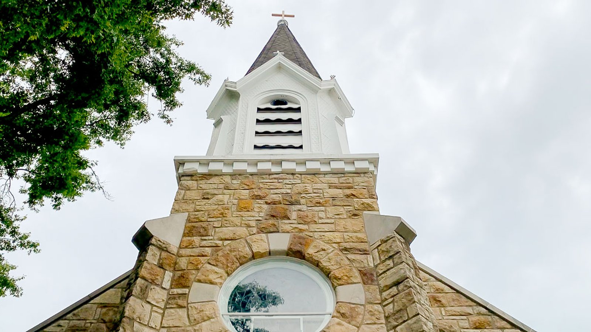

Bienvenido
Bienvenido al sitio de la parroquia.
Holy Trinity Catholic Parish, fundada en 1979, está situada en Lenexa, Kansas. Este sitio es un espejo no oficial preparado bajo la doctrina de EVE Glyph Design, con el mismo esmero editorial que el sitio oficial de la parroquia. La fuente oficial sigue siendo htlenexa.org.
Una parroquia, un pueblo
La fe se vive localmente, con una comunidad que ora, celebra y cuida de los demás.
Horario de misas
| Día | Hora |
|---|---|
| Misa de vigilia, sábado | 4:00 PM |
| Domingo | 7:30 AM · 9:30 AM · 11:30 AM |
| Lunes a viernes | 6:45 AM & 8:15 AM |
| Sábado | 8:00 AM |